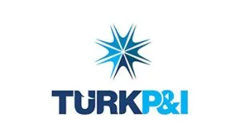
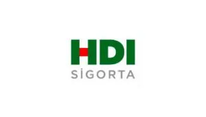
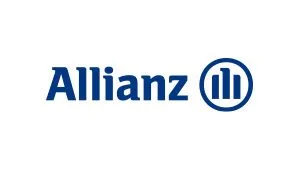
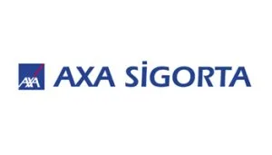
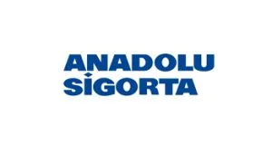
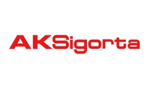

Sigorta Hizmetlerimiz
- Trafik SigortasıDetaylı BilgiSektörün lider firmalarından en uygun seçenekler.
- Kasko SigortasıDetaylı BilgiSektörün lider firmalarından en uygun seçenekler.
- Konut SigortasıDetaylı BilgiSektörün lider firmalarından en uygun seçenekler.
- İşyeri SigortasıDetaylı BilgiSektörün lider firmalarından en uygun seçenekler.
- Seyahat SigortasıDetaylı BilgiSektörün lider firmalarından en uygun seçenekler.
- Sağlık SigortasıDetaylı BilgiSektörün lider firmalarından en uygun seçenekler.
Deniz Araçları Zorunlu Mali Sorumluluk Sigortası
Başvuru Formu
DENİZ ARAÇLARI ZORUNLU MALİ SORUMLULUK SİGORTASI BAŞVURU FORMU
PDF formu indirip doldurduktan sonra bize e-posta ile gönderebilir veya ofisimize getirebilirsiniz.
Sizin için en uygun sigortayı öğrenmek mi istiyorsunuz?
Detaylı bilgi ve sigorta danışmanınızdan yardım almak için hemen arayın. Ya da WhatsApp veya e-posta ile yazın, biz size ulaşalım.





